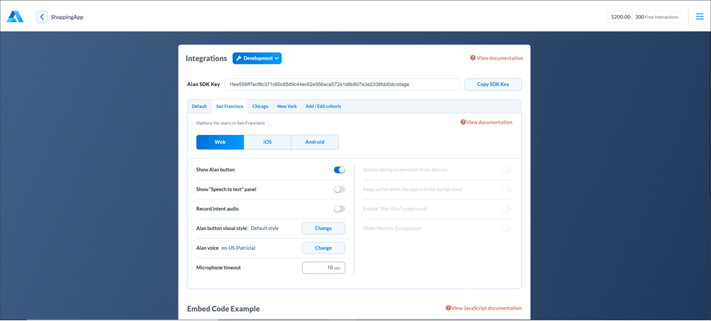

Setting up cohorts¶
By default, AI assistant button settings are applicable to all users interacting with your AI assistant. With Alan AI’s cohort functionality, you can split users into groups and configure custom settings for each of them.
In Alan AI, a cohort is a user group sharing common assistant settings. You can use cohorts to:
Implement a staged rollout scenario. When you add new voice functionality, it can be released to a limited group of users first. You can gradually increase the number of users in the group and finally deploy it for widespread use as the production version.
Configure custom settings for user groups. You can create customized versions of the AI assistant, for example, set up different accents or color schemes for users in different regions.
Initially, all users belong to the default cohort. You can set up as many cohorts as you need and specify the necessary characteristics for them. Users who match the criteria of a cohort are moved to it from the default cohort, and all settings configured for this cohort are applied to these users.
To set up cohorts in Alan AI Studio:
Creating cohorts¶
To set up a cohort:
At the top of the code editor in Alan AI Studio, click Integrations.
To the right of the Default cohort tab, click Add / Edit cohort.
In the Cohort name field, enter a name for the cohort.
To restrict the number of users in the cohort, set the Limit the number of users toggle to the On position and in the Max users field, specify the maximum number of users in the cohort. Settings configured for the cohort will be applied to those users who match the criteria of this cohort and launch the app first.
For example, if you set the cohort size to 10 users, the 11th user launching the app will share the default cohort settings.
The Current users field displays the threshold set for the cohort and the number of users already added to it. Use this field to see how your cohort is populated.
To apply the cohort settings to some users within the group, for example, in the staged rollout scenario, set the Percentage of users to apply cohort toggle to the On position and specify the number of users in percent.
For example, if you limit the cohort size to 100 users and set the percent to 50, Alan AI will randomly select 50 users from the group and apply the cohort settings to them. The applied settings will persist for the users in the cohort each time they launch the app.
To link the cohort with a location, in the Specify location section, set the toggle to the On position and in the field below, start typing the location name. You can add as many locations as you need.
Note
Define locations wisely. Avoid situations when the same group of users belongs to different cohorts, for example, to a cohort linked with a city and to a cohort linked with a country.
You can edit and delete cohorts:
To edit a cohort, in the Integrations view, click Add / Edit cohort, in the left pane, select the cohort and edit its settings as required.
To delete a cohort, in the left pane of the Cohort details view, to the right of the cohort name, click the options icon and select Delete.
Configuring settings for cohorts¶
The AI assistant button settings are configured individually for each cohort. For example, you can enable the button only for a small group of users, change the voice type or accent for user groups in different locations and so on.
To configure the settings for a cohort, click the cohort tab and use the options section to define the necessary behavior for the AI assistant.
